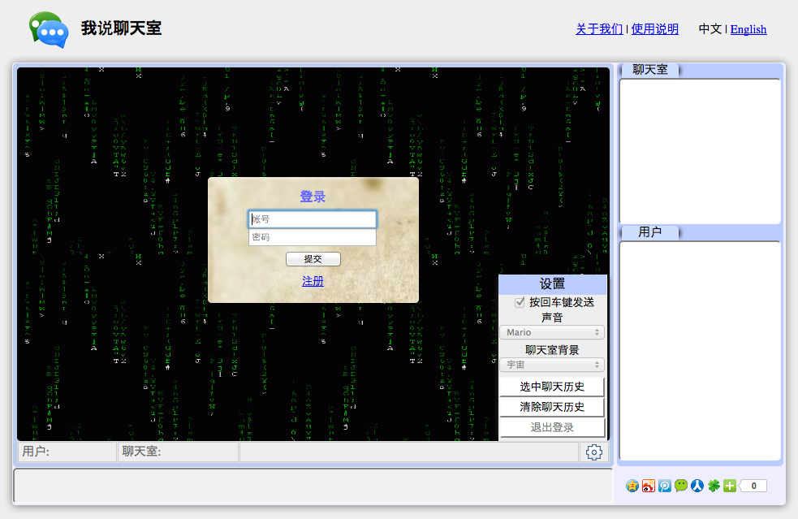
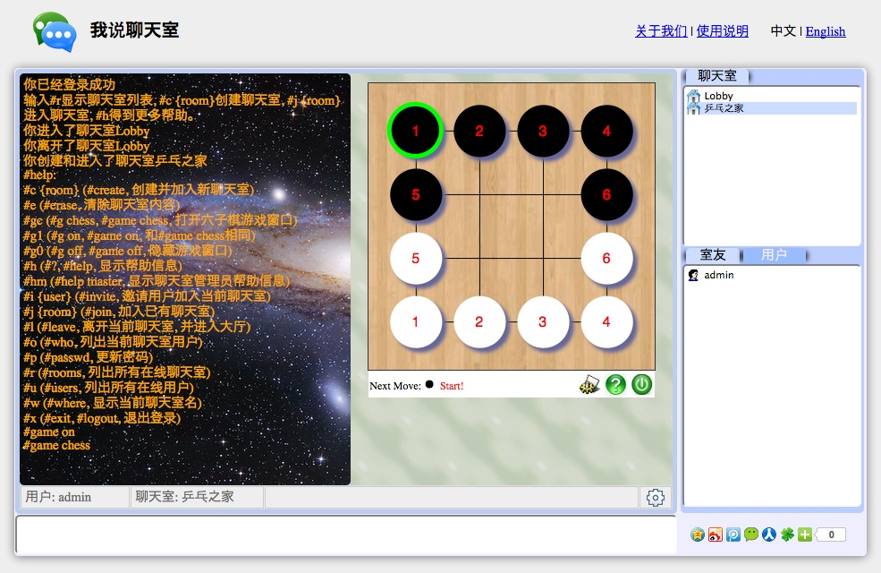

用户界面简介
用户界面截屏(见图一, 图二)包括：
- 聊天室处于屏幕中心，缺省为黑色背景。
- 聊天室下面是状态栏，显示当前用户，当前聊天室，即时消息，喝设置按钮。
- 状态栏下面，屏幕底部是消息输入框。
- 右上方为聊天室显示栏，显示当前所有聊天室。
- 右下方为用户显示栏和当前聊天室用户显示栏。
用户显示栏显示所有当前登录用户。
当前聊天室用户显示栏显示当前聊天室的所有用户。

图1. 聊天室用户界面截屏 (登录前)

图2. 聊天室用户界面截屏 (登录后)
注册
用户注册需要提供帐号和密码。
登录
用户登录需要提供帐号和密码。
更新密码
用户登录后可以更新密码，在消息输入栏键入命令：#passwd
密码更新框将出现。
退出登录
退出登录有两种方法：
1) 在消息输入栏键入命令：#logout, $exit 或 $x
2) 移动鼠标到聊天室右下角设置按钮，在设置里点击“退出登录”。
聊天室命令
所有命令都有长短两种形式。
所有用户均可使用以下命令：
- #a - #app, 显示所有应用
- #a chess - #app chess, 打开六子棋游戏窗口
- #a {app} - #app {app}, 打开指定的应用或URL
- #a1 - #a on, #app on, 打开应用窗口
- #a0 - #a off, #app off, 隐藏应用窗口
- #ac - #a clear, #app clear, 关闭应用，退出应用窗口
- #c {room} - #create, 创建并进入新聊天室（创建者是聊天室管理员，新聊天室缺省为公开聊天室）
- #e - #erase, 清除聊天室内容
- #h - #?, #help, 显示帮助信息
- #hm - $help master, 显示聊天室管理员帮助信息
- #i {user} - #invite, 邀请用户进入当前聊天室
- #j {room} - #join, 进入已经存在的聊天室
- #l - #leave, 离开当前聊天室
- #o - #who, 列出当前聊天室用户
- #p - #passwd 更新密码
- #r - #rooms, 列出当前所有聊天室
- #u - #users, 列出当前所有登录用户
- #v1 - #vid, #vid on, 打开视频窗口
- #v0 - #vid off, 关闭视频窗口
- #w - #where, 显示当前聊天室名
- #x - #exit, #logout 退出登录
聊天室管理员专用命令：
- #b - #public, 设置当前聊天室为公开聊天室
- #k {user} - #kick, 把一个用户踢出当前聊天室
- #m {user} - #master, 转移管理员权限给聊天室内另一个用户。每个聊天室任何时候只有一个管理员。
- #s {size} - #size, 设置聊天室最大容量。0表示没有上限。
- #v - #private, 设置当前聊天室为私人聊天室，只有被私人聊天室内的用户邀请才能加入。
设置
把鼠标放到聊天室右下角的设置按钮上将显示设置框。有以下选择：
- 按回车键发送 － 如果选中，用户按回车键时发送消息(每次发送一行消息)；
否则，点击“发送消息”按钮发送消息(可用于发送多行消息)。
- 设置声音。
- 设置聊天室图片背景。
- 选中聊天历史 － 选中聊天历史，以便复制和粘贴聊天室内容。
- 清除聊天历史 － 清除聊天室信息。
- 退出登录 － 退出当前登录。
其它使用小窍门
- 当设置里"按回车键发送"选中时，另外一种发送多行消息的办法是:
按回车键时同时按住Shift键，可以避免发送消息。
- 按向上方向键可以恢复上一次输入，按向下方向键恢复当前输入。
- 鼠标双击聊天室名可以进入该聊天室。
- 用户可以同时登录多次。第二次以后登录的帐号名后面会跟一个序列号。
- 使用视频功能时，先打开视频窗口，然后按顶部开始按钮开始发送视频。
目前没有声音，只有视频。
没有发送视频的时候，用户可以点击自己视频左上角的上传图标上传图片。
(如果用户在发送视频，上传的图片会立即被覆盖掉。）
 我说聊天室使用说明
我说聊天室使用说明